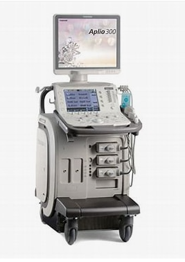

【対応言語】 英国での臨床経験あり、英語での診療も可能です。
院長あいさつ
地域の皆さまの健康を守るホームドクターとして、やさしく丁寧な診療を心がけています。
【注意事項】 小児科診療はしておりません。
診療案内
- 内科
- アレルギー・喘息・呼吸器内科
- 消化器内科
生活習慣病・風邪・胃腸炎など幅広く対応しております。
【ご案内】 胃カメラ・大腸カメラの予約は随時受けておりますが、当日の緊急内視鏡検査は施行しておりません。
胃カメラ・大腸内視鏡検査
当院では最新の内視鏡システム GIF-1200N を導入し、
苦痛の少ない、安心・安全な胃カメラ・大腸カメラ検査を提供しています。
検査は静かな個室で実施し、プライバシーにも配慮しています。

アクセス
鹿児島県奄美市名瀬長浜町4-11
最寄バス停：道の島交通「長浜入り口バス停」より 徒歩2分／駐車場完備
【初診の方へ】 手元にある健診データなど全てご持参ください。お薬手帳や紹介状・他医療機関より頂いた資料も受付にてご提出をお願いいたします。
【お知らせ】 GW(4月末～5月初旬)は休診・休業の場合があります。来院前に必ず医療機関に直接ご確認ください。
お問い合わせ
電話番号：0997-55-0303
| 曜日 | 午前 | 午後 |
|---|---|---|
| 月・火・木・金 | 8:30～16:30（昼休みなし） | |
| 水曜（隔週） | 休診 | |
| 土曜（月1回休診） | 8:30～12:30 | |
| 日・祝 | 休診 | |